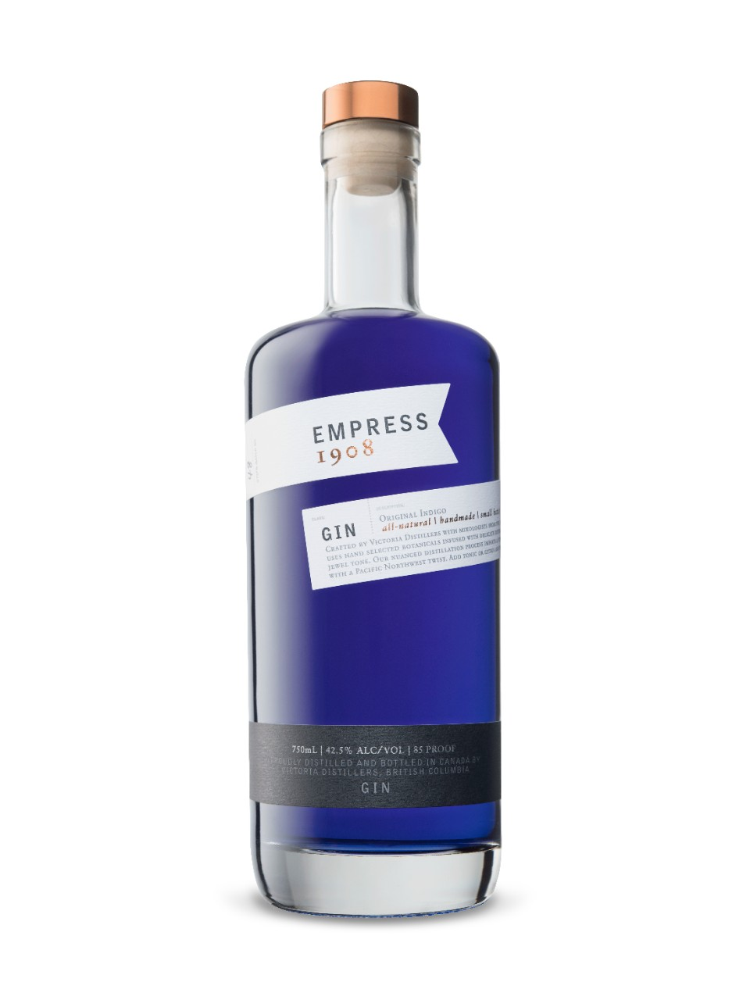
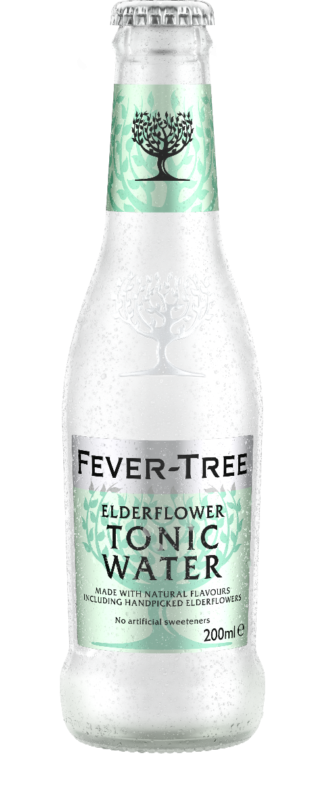
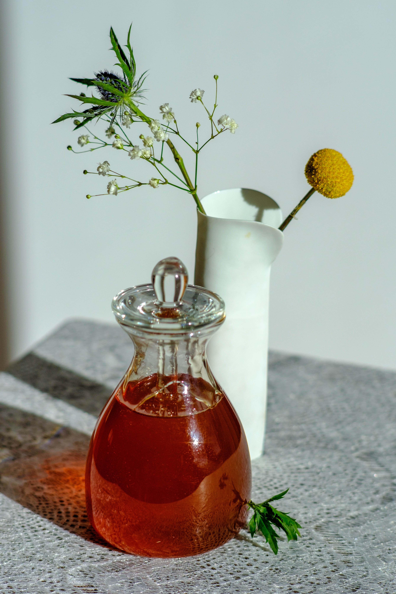
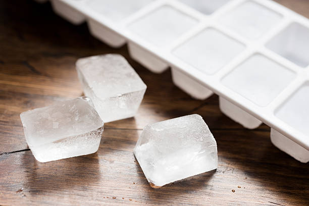
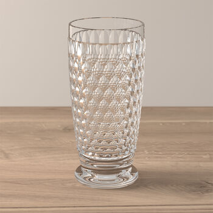

- Empress 1908 Gin 
- Fever-Tree Elderflower Tonic Water 
- Lavender Simple Syrup 
- Lemon (optional)
- Ice 

Equipment
- Tall Glass that holds 8-12oz 
- Metal spoon
- Knife & Cutting Board(optional)


The perfect floral drink for the summer that will impress your friends with its elegant colour and complex flavours. This drink changes colour when the tonic water is added to the butterflypea flower gin to create a light violet shade.
The recipe for Lavender Simple Syrup if you wish to make it at home
Some of these ingredients and steps can be swapped or ommited and the drink will still be very tasty. However, it is best to try and use the ingredients listed if you want the same colour and taste as the recipe.
You can change the gin to one you like or have available but the colour will not be present.
If you dont have lavender simply syrup you can make it at home with this recipe. If you don't have or want to use lavender syrup I suggest using basic simple syrup.
You can use granulated sugar however, it may not disolve fully into the drink using a simple syrup is best as it does not leave texture in the drink.
Be sure to read over the frequently asked questions before purchasing anything. Feel free to make changes if you want to use what is available around the house. Now that you have gathered your ingredients and equipment let's get to making the drink!